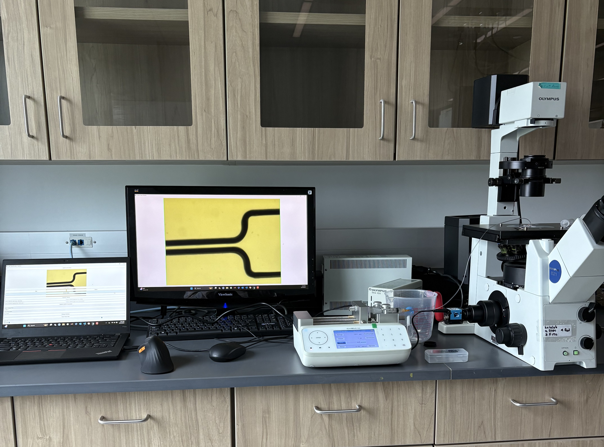
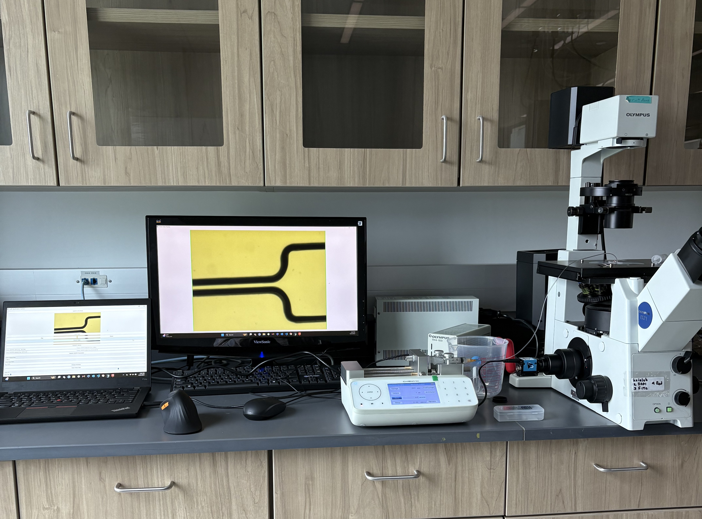

Project Overview
Blood cell heterogeneity and activation play crucial roles in inflammatory responses and immune disorders. Variations in morphology, mechanical properties, and biochemical composition serve as key indicators of these conditions. This research presents an AI-assisted imaging flow cytometry (AIFC) system designed for real-time blood cell classification. Utilizing a pretrained AI model, the system automatically detects and categorizes blood cells from microscopy images while simultaneously measuring cell velocity based on pixel displacement and frame rate. To enhance precision and control, the velocity data feeds into a closed-loop system that dynamically adjusts a custom syringe pump to regulate flow conditions. Additionally, single-cell mechanical properties are extracted by analyzing deformation behavior through constitutive modeling. By integrating AI-driven classification with adaptive fluidic control and electrical impedance measurements, this next-generation AIFC system provides a high-throughput, automated platform for precise single-cell analysis.
 

Research Objectives
- Develop an adaptive flow control system for precise cell positioning and velocity management
- Implement AI-assisted image analysis using pretrained models for automated cell detection and classification
- Train a YOLOv8-based neural network for high-accuracy RBC and WBC classification
- Create a closed-loop system integrating flow control with real-time imaging feedback
- Extract single-cell mechanical properties through deformation behavior analysis
- Implement electrical impedance measurements using Eclypse Z7 FPGA board with digitizer and AWG modules
- Correlate electrical impedance properties with cell classification types for enhanced diagnostic accuracy
- Achieve high-throughput automated classification suitable for clinical diagnostics
- Enable diagnosis of hemolytic diseases, immune disorders, and blood-related conditions
Technical Approach
Adaptive Flow Control
A custom microfluidic chip enables precise control of cell position and velocity using a closed-loop system with real-time feedback from imaging data. The system continuously monitors cell flow and adjusts parameters to maintain optimal conditions for imaging and analysis.
AI-Assisted Image Analysis
Utilizing a pretrained AI model, the system automatically detects and categorizes blood cells from microscopy images. Individual cells are detected and annotated manually with Label Studio software for training data preparation. These annotated cells are segmented and labeled as RBCs or WBCs for training the neural network, ensuring high-quality training data for accurate classification.
Neural Network Classification
The cell images train a YOLOv8-based neural network for automated cell classification. Training data was split into a training set and validation set to assess model performance, with precision for RBC classification reaching 0.943 and WBC classification achieving 0.706.
Closed-loop Velocity Measurement
Cell velocity is assessed by analyzing pixel displacement across frames and frame rate, with the velocity data feeding into a closed-loop system that dynamically adjusts a custom syringe pump to regulate flow conditions. This ensures consistent imaging conditions and optimal analysis results.
Electrical Impedance Measurement System
The system utilizes an Eclypse Z7 FPGA development board equipped with digitizer and arbitrary waveform generator (AWG) modules to perform precise electrical impedance measurements. A custom electrical circuit connects to a microfluidic channel with integrated electrodes at the base, enabling real-time impedance characterization of individual cells as they flow through the measurement zone. The AWG module generates controlled electrical signals across a range of frequencies while the digitizer captures the response, allowing for comprehensive impedance spectroscopy analysis.
Mechanical Properties Analysis
Single-cell mechanical properties are extracted by analyzing deformation behavior through constitutive modeling. This analysis provides insights into cell stiffness, elasticity, and other mechanical characteristics that serve as key indicators of cell health and activation states.
Electrical-Classification Correlation
The electrical impedance measurements are correlated with AI-assisted cell classification to establish relationships between electrical properties and cell types. This dual-parameter approach enhances diagnostic accuracy by combining morphological, mechanical, and electrical characteristics for comprehensive cell analysis.
Technologies & Tools
My Key Contributions (Computer Vision & Controls)
- Developed computer vision algorithms for automated cell detection and classification
- Implemented adaptive flow control system with real-time feedback for optimal cell imaging
- Utilized pretrained AI models for enhanced cell detection and classification accuracy
- Trained and optimized YOLOv8 neural network for automated blood cell classification
- Achieved high precision classification (RBC: 0.943, WBC: 0.706) suitable for clinical applications
- Created a closed-loop control system enabling autonomous cell analysis in flow conditions
- Implemented real-time velocity measurement using pixel displacement analysis
- Developed custom syringe pump control algorithms for precise flow regulation
- Integrated computer vision feedback with adaptive control systems
- Built automated cell tracking and classification pipeline for high-throughput analysis
Results & Impact
The AI-assisted system accurately classified cells during flow conditions, maintaining high precision for both RBCs and WBCs. The integrated approach significantly increases efficiency and accuracy of cell classification, making it suitable for point-of-care and diagnostic laboratory applications. The system successfully demonstrates the potential for automated blood cell analysis in clinical settings. Additionally, the mechanical properties analysis provides valuable insights into cell deformation behavior, enabling characterization of cell stiffness and elasticity as indicators of cell health and activation states. The electrical impedance measurements using the Eclypse Z7 FPGA board with digitizer and AWG modules successfully captured distinct electrical signatures for different cell types, providing an additional classification parameter that correlates with the AI-based morphological analysis.
The system represents a significant advancement in automated cell analysis, providing:
- Real-time classification capabilities using pretrained AI models
- High-throughput processing suitable for clinical workflows
- Improved accuracy compared to traditional manual methods
- Mechanical properties analysis for comprehensive cell characterization
- Electrical impedance measurements for additional cell characterization parameters
- Multi-parameter analysis combining morphological, mechanical, and electrical properties
- Potential for point-of-care diagnostic applications
- Enhanced understanding of blood cell heterogeneity and activation states
Future Work
Future extensions include refining subcategory identification within WBCs, such as distinguishing T-cells and B-cells. Additional research directions include:
- Expanding the system to analyze other cell types beyond blood cells
- Improving classification accuracy for WBC subcategories
- Enhancing mechanical properties analysis for more detailed cell characterization
- Optimizing electrical impedance measurement protocols for improved sensitivity and specificity
- Developing machine learning algorithms to better correlate electrical impedance signatures with cell types
- Expanding impedance spectroscopy to cover broader frequency ranges for comprehensive electrical characterization
- Developing portable versions for point-of-care applications
- Integrating with existing clinical laboratory information systems
- Exploring applications in inflammatory response monitoring and immune disorder diagnosis